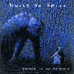
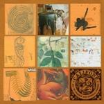

Music Reviews
-

Built To Spill There Is No Enemy
Built To Spill's new album There Is No Enemy sounds like a hodge podge of the best work of their long career. It's a satisfying entry into their catalogue, and sees them plumbing the sonic depths of their earlier albums. Yet, there's nothing new here, and nothing new from someone great is still nothing to be really excited about.
Preston Bernstein reviews... -

Stricken City Songs About People I Know
London four-piece study the ways of guitar pop, ditch the glamour that surrounds them, and display some unforeseen surprises.
Juan Edgardo Rodríguez reviews... -

Fuck Buttons Tarot Sport
Fuck Buttons have gone kind of accessible - and the results are less than thrilling.
Andrew Baer reviews Tarot Sport... -

Jesu Opiate Sun
In an attempt to steer clear of an increasingly electronic influence, Jesu's only EP of 2009 (so far, anyway) races back to his sludge-throne of yore.
Ryan Pratt uncovers more evidence that you can't go home again... -

The Twilight Sad Forget The Night Ahead
The follow up to 2007's Fourteen Autumns and Fifteen Winters fails to match the dizzy heights of its predecessor.
Nick Fenn reviews... -

Jason Urick Husbands
Background music? Not unless the foreground is even more interesting than this album.
Ryan Faughnder reviews... -

Califone All My Friends Are Funeral Singers
Califone returns with yet another solid set of interesting folk-rock songs.
Andrew Baer enjoys himself well enough... -

Flaming Lips Embryonic
The Flaming Lips rediscover their psych-rock roots.
Brett Oronzio reviews... -

Mission of Burma The Sound, the Speed, the Light
The Sound, the Speed, the Light, Mission of Burma's third album since their unexpected comeback, brings back the raw immediacy that defined their flawless execution in the eighties.
Juan Edgardo Rodríguez can't escape his fate to write this review... -
Or, the Whale Or, the Whale
"To produce a mighty book, you must choose a mighty theme. No great and enduring volume can ever be written on the flea, though many there be who have tried it" - Herman Melville
Ryan Faughnder reviews...